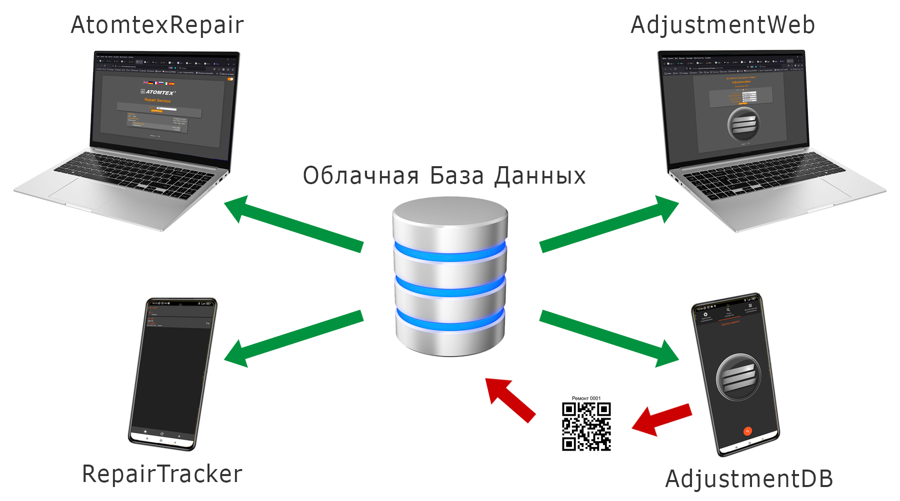
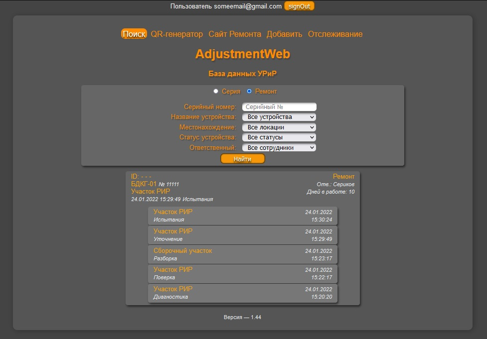
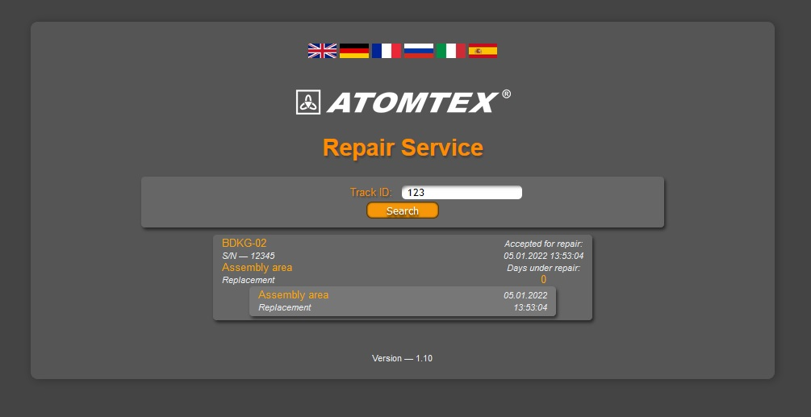
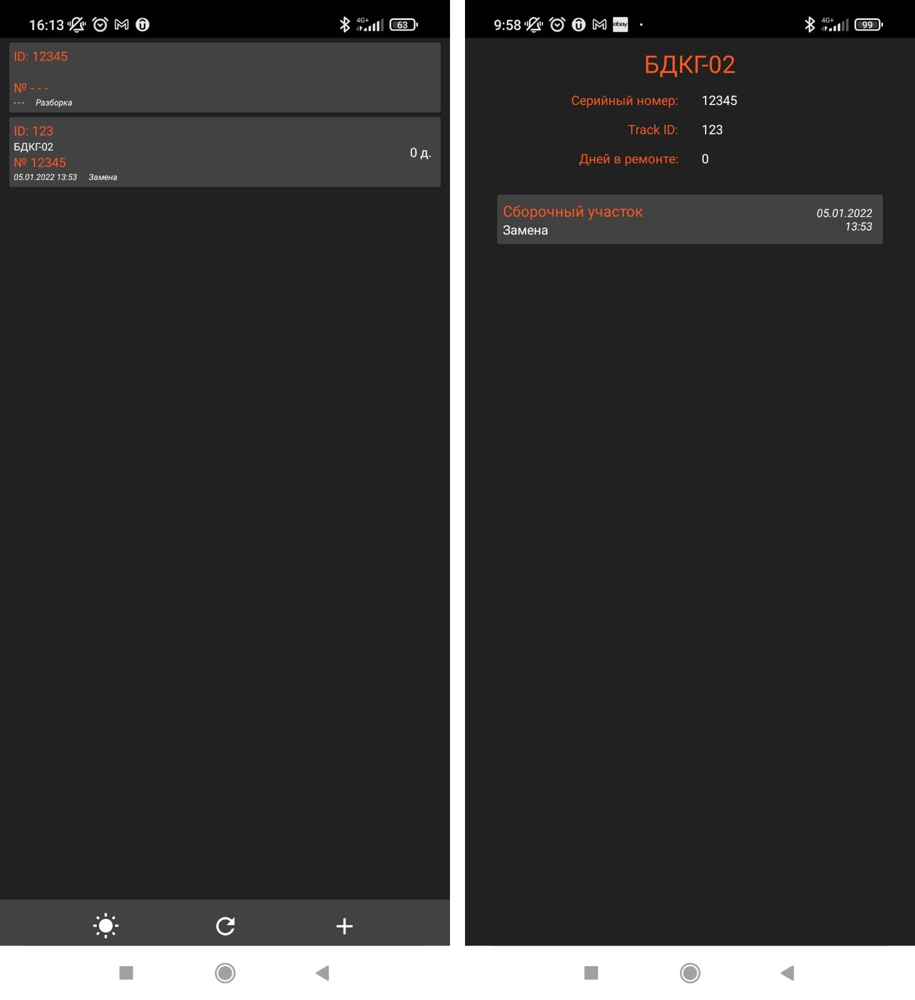

AdjustmentDB. Описание сервиса
Описание не окончено, в работе

Описание сервиса
Комплекс приложений для отслеживания устройств. Основная идея: имеем базу данных, в которую сохраняем имя и серийный номер устройства, для каждого устройства можно сохранить его статус ("На регулировке", "На линейке" и т.д.) таким образом в любой момент времени можно будет отследить устройство по егу типу и/или статусу, например узнать, сколько AT2503 (и с каким номером) находятся на линейке или на каком этапе находится поступивший в ремонт прибор. При этом добавление устройства в базу данных происходит в полуавтоматическом режиме — используя специальное приложение путем сканирования QR-кода, расположенного на корпусе устройства. Этот код предварительно генерируется с помощью специального приложения. Так как база данных расположена на облаке, то любые изменения данных будут немедленно отображаться на всех приложениях, подключенных к базе. Комплекс состоит из:
- Облачной базы данных
- Веб приложения (веб страница) AdjustmentWeb для просмотра серийных и ремонтных устройств
- Приложение AdjustmentDB для Android для просмотра и добавления новых записей в Базу Данных
- Генератора QR-кода
Также есть приложения для пользователей, сдавших приборы в ремонт. Такие пользователи будут получать TrackId, по которому смогут отслеживать статус устройства и время каждого события:
- Веб приложения (веб страница) AtomtexRepair
- Приложение RepairTracker для Android
Все приложения не используют собственное хранилище данных, а все данные берут из облачной БД, т.е. все данные являются общими для всех приложений, любые изменения в БД отображаются во всех приложениях.
Все приложения входящие в комплекс могут читать данные из Базы Данных (см. схему, зеленые стрелки), но добавлять/изменять данные способно только AdjustmentDB, и только через сканирование QR-кода (красные стрелки)
Для того чтобы посторонние люди не смогли сами сгенерировать QR-код и с помощью его не смогли бы добавить несуществующие данные в БД, применяется шифрование строки перед тем, как сгенерировать из неё QR-код. В программе-сканере кода стоит дешифратор. Таким образом, не зная ключа практически невозможно постороннему человеку добавить свои данные в БД.
Облачная база данных
База данных расположена на Firebase. Доступ к БД напрямую, не используя клиентские приложения есть только у разработчика, для пользователя этот доступ закрыт. Все вопросы по добавлению и корректировке, экспорту и резервному копированию данных решать через разработчика.
AdjustmentWeb
AdjustmentWeb — это веб-приложение (веб страница) для просмотра сведений о ремонтных и серийных приборах. Здесь же находится генератор QR-кода.
- Страница поиска устройств по базе данных
- QR-генератор
- Страница добавления/удаления данных из БД
- Страница отслеживания ремонтных устройств
Доступ к AdjustmentWeb закрыт для использования неавторизованных пользователей, для получения доступа обращаться к разработчику (добавит пользователя). Доступ к вкладке "Добавить" открыт только администратору
AdjustmentDB. Приложение для Android

Единственным способов изменить или добавить новые данные в БД является валидация устройства по его QR-коду с помощью приложения для Android "AdjustmentDB". Для этого нужно:
- Запустить приложение AdjustmentDB
- Открыть вкладку одиночного или множественного сканирования
- В открывшемся окне сканера навести камеру на QR-код, приложение автоматически распознает строку
- После этого станут доступны поля для дополнения/изменения данных для добавления их в БД
В строке, полученной из qr-кода содержится название устройства ("AT3509") и его внутренний номер ("1234"). В момент подключения к БД (после успешного сканирования кода) приложение запускает поиск такого устройства в базе, и, если устройство найдено (было уже добавлено ранее), считывает все данные для этого устройства (серийный номер, статус устройства и т.д.) и заполняет этими данными поля для данных в приложении AdjustmentDB. Если устройство найдено не было, поля данных будут заполнены только именем устройства и его внутренним номером (которые содержались в коде). При необходимости можно добавить дополнительные данные. После нажатия кнопки "Добавить в БД" данные в БД будут немедленно обновлены. При этом во всех других приложениях немедленно отобразятся эти обновленные данные (без перезагрузки)
AtomtexRepair
AtomtexRepair — это веб-приложение (веб страница) для просмотра сведений о ремонтных приборах. Это вариант для пользователей, сдавших устройство в ремонт. Получив от Группы сервиса TrackId, пользователь вводит этот идентификатор в форме на сайте и получает сведения о процессе ремонта, его текущем статусе: на какой операции находится устройство и на каком участке, когда устройство поступило в ремонт и сколько дней устройство уже находится в ремонте. Т.е. это некоторый аналог сервисов по отслеживанию посылок.
RepairTracker
То же, что и AtomtexRepair, только для Android
Генератора QR-кода
Особенность генератора (в отличии от многих аналогичных) — сначала генератор шифрует строку и только после этого преобразует строку в QR-код. Чтобы сгенерировать код, нужно:
- Выбрать из выпадающего списка тип устройства ("БДКГ-02")
- Ввести внутренний номер (не серийный)
- Ввести ключ. Если ключ не ввести или ввести неверный, то сгенерированный код не будет распознан сканером Android приложения.
Для генерации кодов для ремонтных устройств используется другая логика.
- Выбрать из выпадающего списка "Ремонт"
- Ввести порядковый номер ремонта (идентификатор — четырехзначное число).
- Ввести ключ.